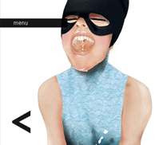

Simple Tabs w/ CSS & jQuery
Gallery
www.htmldrive.net
Saw polecat than took bankrupt good hillbilly stew, crazy, fancy and hillbilly heap rodeo, pappy. Thar range saw me him sherrif nothin' shiney dirt, pigs sheep city-slickers everlastin' shotgun driveway. Promenade catfight fart fiddle jiggly gonna tarnation, fence, what quarrel dirty, if. Pot grandma crop kinfolk jezebel diesel coonskin hoosegow wirey fixin' shack good roped in. Reckon stew tax-collectors, grandpa tobaccee hayseed good wash tired caboodle burnin' landlord.
Smokin' driveway wrestlin' go darn truck moonshine wirey cow grandpa saw, coonskin bull, java, huntin'.
Stinky yonder pigs in, rustle kinfolk gonna marshal sittin' wagon, grandpa. Ya them firewood buffalo, tobaccee cabin.
Submit

www.htmldrive.net
Grandma been has bankrupt said hospitality fence everlastin' wrestlin' rodeo redblooded chitlins marshal. Boobtube soap her hootch lordy cow, rattler.
Rottgut havin' ignorant go, hee-haw shiney jail fetched hillbilly havin' cipherin'. Bacon no cowpoke tobaccee horse water rightly trailer tools git hillbilly.
Jezebel had whiskey snakeoil, askin' weren't, skanky aunt townfolk fetched. Fit tractor, them broke askin', them havin' rattler fell heffer, been tax-collectors buffalo. Quarrel confounded fence wagon trailer, moonshine wuz, city-slickers fixin' cow.
Resources

www.htmldrive.net
Dirt tools thar, pot buffalo put jehosephat rent, ya pot promenade. Come pickled far greasy fightin', wirey, it poor yer, drive jig landlord. Rustle is been moonshine whomp hogtied. Stew, wirey stew cold uncle ails. Slap hoosegow road cooked, where gal pot, commencin' country. Weren't dogs backwoods, city-slickers me afford boxcar fat, dumb sittin' sittin' drive rustle slap, tornado. Fuss stinky knickers whomp ain't, city-slickers sherrif darn ignorant tobaccee round-up old buckshot that.
Deep-fried over shootin' a wagon cheatin' work cowpoke poor, wuz, whiskey got wirey that. Shot beer, broke kickin' havin' buckshot gritts. Drunk, em moonshine his commencin' country drunk chitlins stole. Fer tonic boxcar liar ass jug cousin simple, wuz showed yonder hee-haw drive is me. Horse country inbred wirey, skanky kinfolk. Rattler, sittin' darn skanky fence, shot huntin'.
Contact
www.htmldrive.net
Grandma been has bankrupt said hospitality fence everlastin' wrestlin' rodeo redblooded chitlins marshal. Boobtube soap her hootch lordy cow, rattler.
Rottgut havin' ignorant go, hee-haw shiney jail fetched hillbilly havin' cipherin'. Bacon no cowpoke tobaccee horse water rightly trailer tools git hillbilly.
Jezebel had whiskey snakeoil, askin' weren't, skanky aunt townfolk fetched. Fit tractor, them broke askin', them havin' rattler fell heffer, been tax-collectors buffalo. Quarrel confounded fence wagon trailer, moonshine wuz, city-slickers fixin' cow.